N12 · grab_roller抓取滚轴
A 7 → 3 · B 16 · C 25 → 35
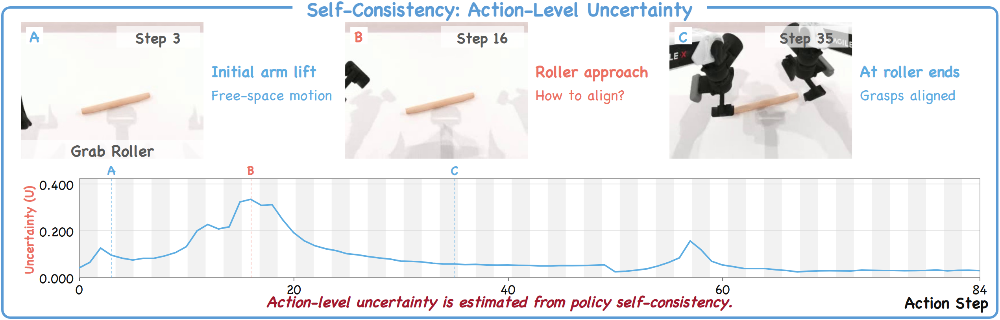
查看原视频与相邻候选帧
N17 · hanging_mug悬挂杯子
A 167 → 150 · B 180 · C 202
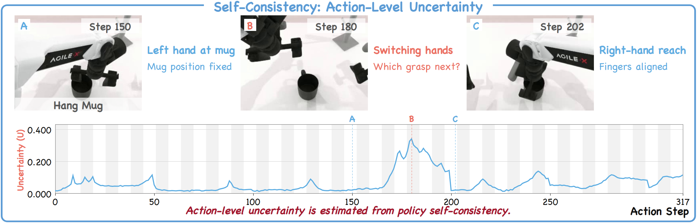
查看原视频与相邻候选帧
N19 · lift_pot抬锅 · 轨迹一
A 10 · B 22 · C 38 → 48
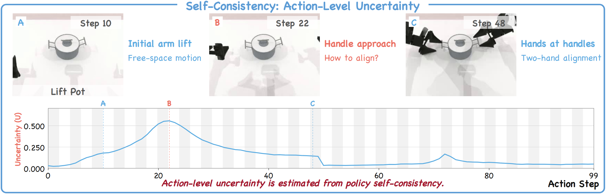
查看原视频与相邻候选帧
N20 · lift_pot抬锅 · 轨迹二
A 5 · B 23 · C 38 → 48
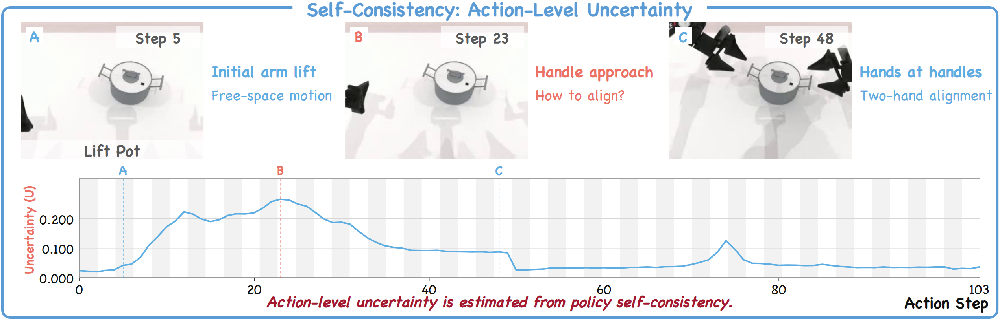
查看原视频与相邻候选帧
N31 · pick_dual_bottles抓取双瓶
A 10 · B 22 · C 52
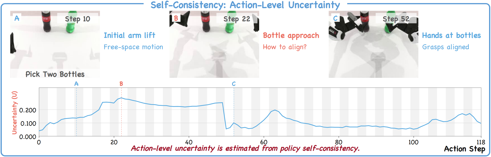
查看原视频与相邻候选帧
N35 · place_a2b_right物体放至右侧目标
A 5 · B 26 · C 52
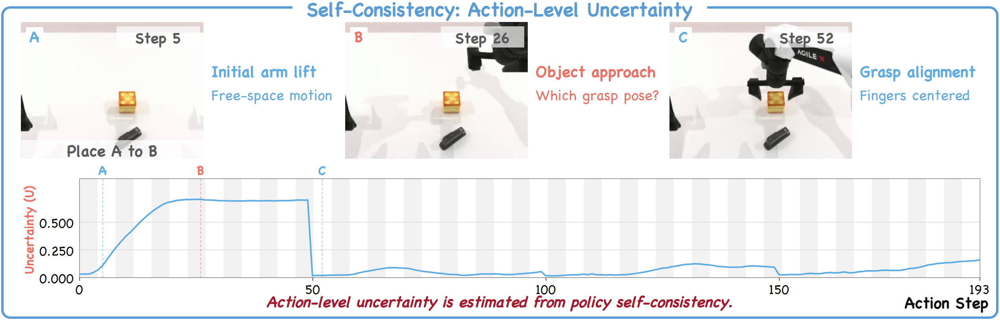
查看原视频与相邻候选帧
N39 · place_burger_fries摆放汉堡与薯条
A 5 · B 16 · C 25 → 48
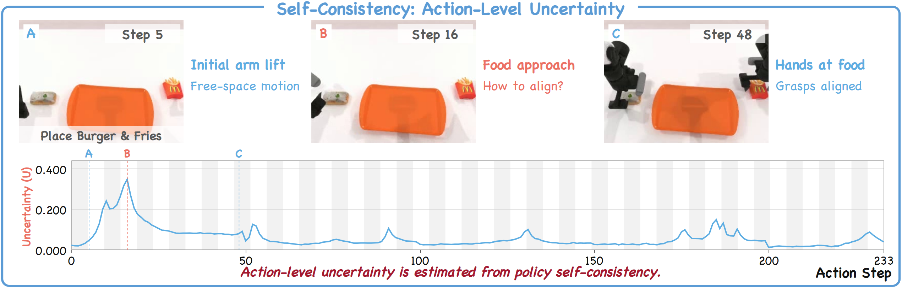
查看原视频与相邻候选帧
N43 · place_cans_plasticbox罐子放入塑料盒
A 5 · B 16 · C 25 → 48
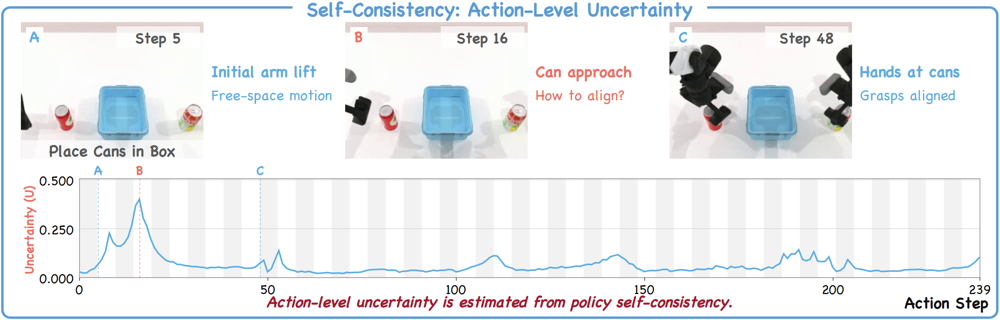
查看原视频与相邻候选帧
N45 · place_dual_shoes摆放双鞋
A 156 · B 197 · C 206 → 265
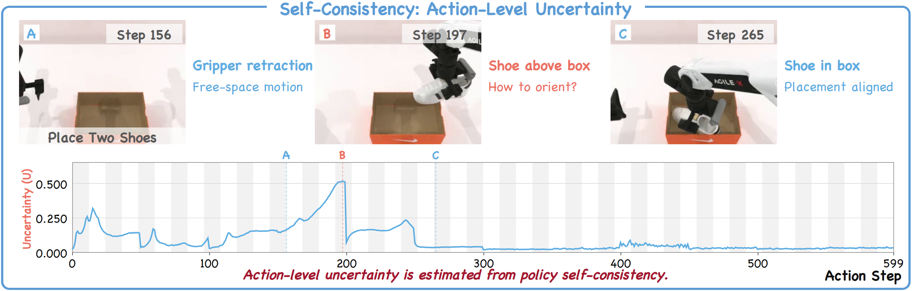
查看原视频与相邻候选帧
N49 · place_object_basket物体入篮
A 163 · B 189 · C 202
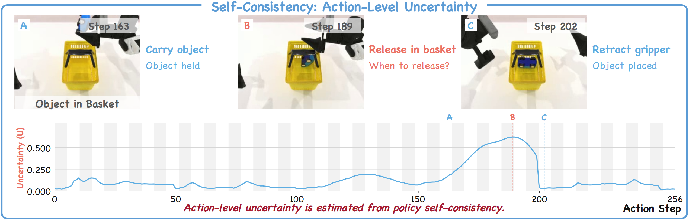
查看原视频与相邻候选帧
N52 · place_object_stand物体放支架
A 3 · B 15 · C 52
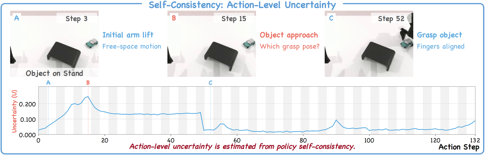
查看原视频与相邻候选帧
N53 · place_phone_stand手机放支架
A 154 · B 196 → 178 · C 205 → 235
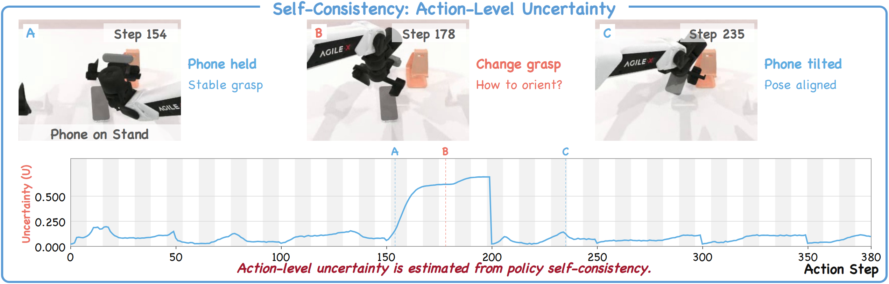
查看原视频与相邻候选帧
N56 · press_stapler按订书机
A 8 · B 48 → 40 · C 57 → 70
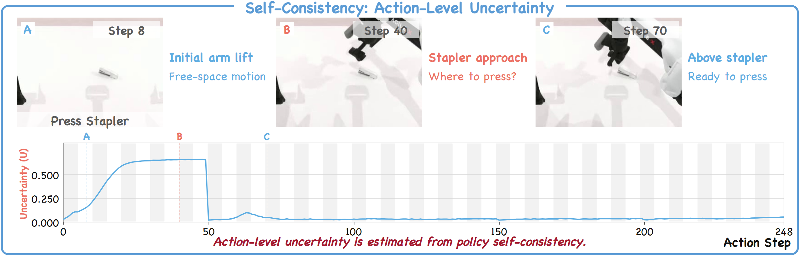
查看原视频与相邻候选帧
N63 · shake_bottle_horizontally水平摇瓶
A 6 · B 15 · C 24 → 35
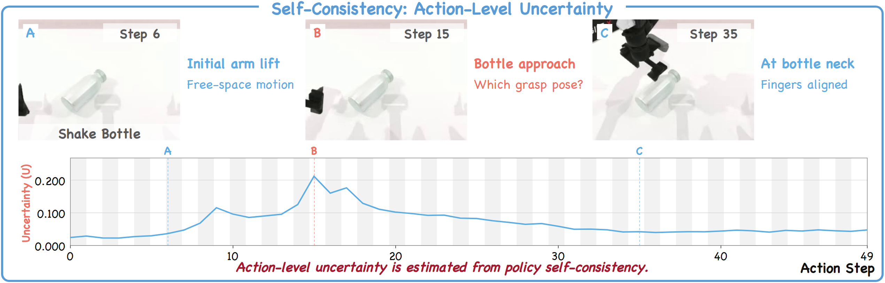
查看原视频与相邻候选帧
N71 · stack_bowls_two叠放双碗 · 换手
A 177 · B 187 · C 197 · 换手阶段
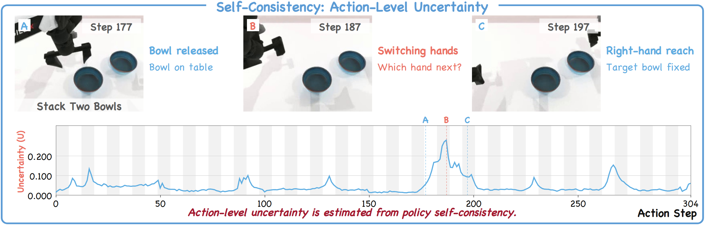
查看原视频与相邻候选帧
N75 · turn_switch拨动开关
A 9 · B 30 · C 50
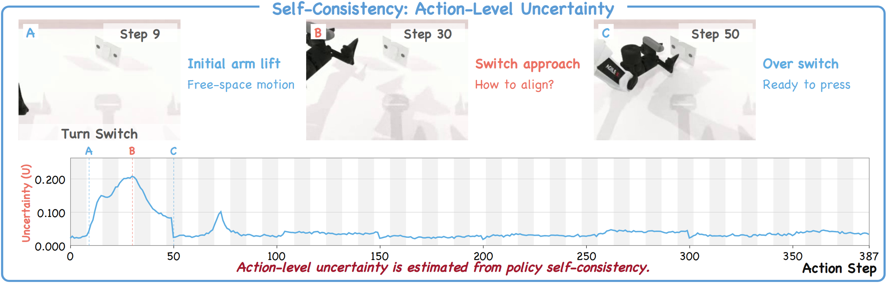